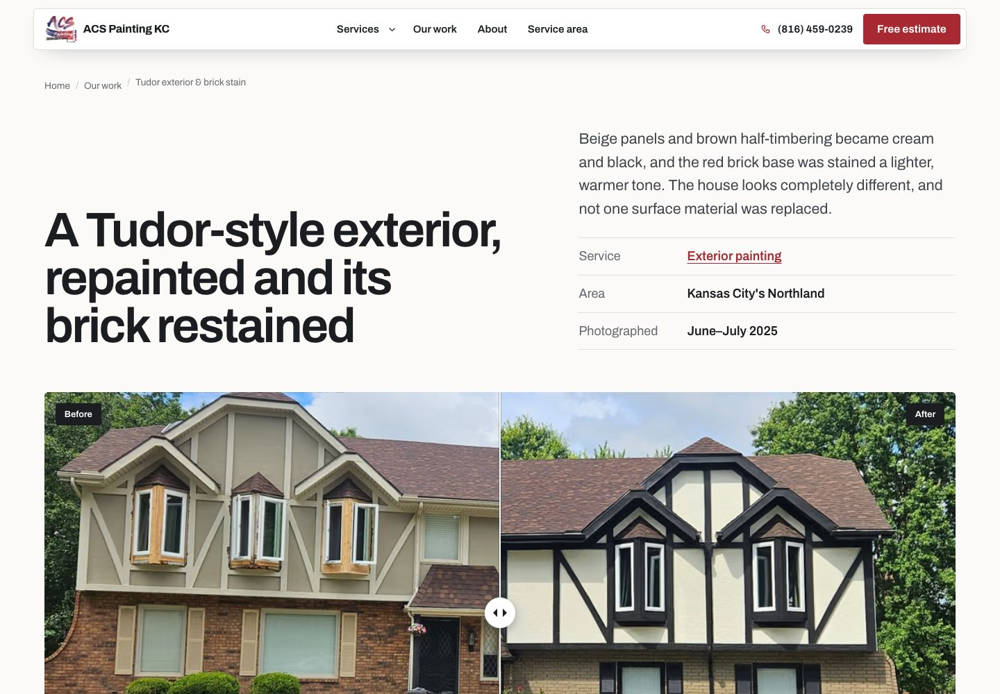
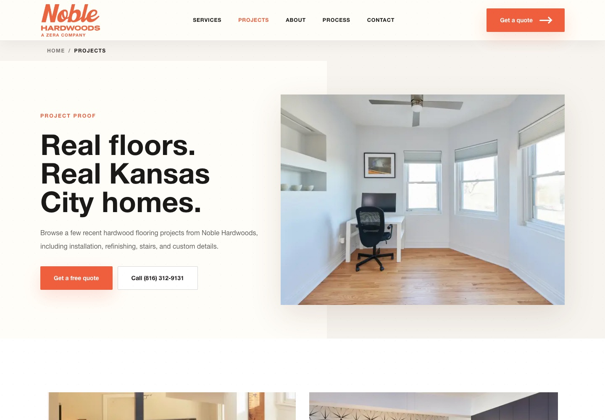

How to Build a Contractor Portfolio That Helps Homeowners Request a Quote
A useful contractor portfolio shows the jobs you want more of, explains what changed, and gives homeowners a clear next step. Choose real projects, pair photos with short scope notes, connect each example to its service, and make requesting a quote easy. Start with one well-documented job rather than a large unexplained gallery.
You may already have the raw material on your phone: a room before work started, a detail you took time to get right, and the finished job. On a website, those photos need enough context to help someone decide whether you can handle a project like theirs.
Here is a practical way to assemble that proof, with examples from two Kansas City businesses whose websites we built.
1. Choose projects that match the work you want to book
A contractor portfolio is a selected collection of completed work. For your website, the selection should help a homeowner answer, “Have they handled something like my job?”
If you want more cabinet painting projects, make cabinet work easy to find. If you want flooring refinishing inquiries, show refinishing examples and explain the starting condition. A gallery dominated by unrelated work leaves the visitor to guess.
Three to five well-documented projects can be a manageable starting point. One useful example is enough to begin if that is what you have permission to share. Choose work you can explain accurately, and identify your part when other trades contributed.
Keep the scope honest. A photo of a finished kitchen should not suggest you built the cabinetry, installed the counters, and laid the floor if your company only painted the cabinets.
2. Capture a small, repeatable photo set
You do not need dozens of images for every job. Start with four views that serve different purposes:
| Photo | What it helps explain |
|---|---|
| Before: a wide view | The condition or problem the customer started with. |
| During: a process detail | The preparation or work that would otherwise be hidden. |
| After: a matching wide view | The visible change, with enough surroundings to understand the project. |
| Finished detail | A specific feature, finish, repair, or piece of workmanship worth inspecting. |
For before-and-after photos, use a similar position and framing where practical. Keep color and exposure reasonably consistent. Heavy filters or a much brighter “after” photo make it harder to judge what actually changed.
Take pictures when it is safe and appropriate during normal work. Before sharing them, confirm you have permission and check for house numbers, family photos, paperwork, people, and other identifying details. A broad service area can provide context without revealing a homeowner’s address.
Missing a before photo? Publish the finished work with an accurate explanation. Do not substitute an unrelated image to create a comparison.
3. Turn the photos into a short project story
“Another happy customer” leaves most of the useful information out. A homeowner needs to know what the job involved, what you did, and which details apply to their own project.
A concise paragraph or two is often enough. Explain the starting point, your scope, one meaningful process detail, and the finished result. Add verified materials, dates, or measurements when they help; leave them out when you cannot confirm them.
For example, a painting project might explain which surfaces were repainted, whether damaged areas needed repair, and how the final finish differed from the starting condition. Each detail should come from the actual job. There is no need to invent a dramatic problem or a customer quote.
Copy this project-story worksheet
- Project and service: What did your company do?
- Broad location: Which city or service area can you accurately name?
- Customer goal: What did the homeowner want to change?
- Starting condition: What can you explain or show from before the work?
- Scope and process: What work did you perform, and which preparation detail matters?
- Finished result: What changed that the photos and project records support?
- Images: Which approved photos show the story clearly?
- Next step: Which service page and quote option should the reader use?
Write captions that help someone interpret the image. “After” is a useful label, but nearby text can explain the surface, service, or change. A construction project portfolio becomes more useful when readers can understand the work without having been on site.
4. Two Kansas City contractor website examples
These examples show how project context, photography, and the next step can work together. Hometown built the websites; the featured businesses performed the painting and flooring work.
ACS Painting KC: explain the change beside the comparison

The project page identifies a Tudor-style exterior repaint and brick restaining. Beside the heading, the text explains the changes to the panels, half-timbering, and brick. The page also identifies the service, broad area, and when the photos were taken.
That context gives the before-and-after comparison a specific job. Readers can inspect the visible changes and understand what work produced them. The service link gives someone considering similar work a route to learn more.
You can use the same approach on a simpler page: a clear project title, a few factual sentences, labeled images, and a link to the relevant service. An interactive slider is optional.
Noble Hardwoods: give the gallery a purpose and a next step

The Noble Hardwoods gallery opens with a finished flooring photo and an introduction explaining that the projects include installation, refinishing, stairs, and custom details. Quote and call options appear beside that introduction.
The visitor can understand what the gallery covers and how to start a conversation. For your own gallery, carry that clarity into the individual examples: label the service, explain the work, and make the next step easy to find.
These are examples of website structure. They do not establish how many inquiries a particular photo generated.
5. Connect the portfolio to a quote request
A homeowner may enter your site through a service page, a project story, or the homepage. Make sure the proof is reachable from the relevant service, and give the project story a link back to that service.
A useful path might be: exterior painting service → exterior repaint example → request an estimate. At each step, the visitor should understand where the link leads.
A gallery index helps people browse. A detailed project page gives you room to explain a job. Create that separate page when you have enough distinct, useful material; a small project can remain a section in the gallery. Repeating the same photos and paragraph under different city names adds little for the reader.
Near the example, use a straightforward action such as “Request a painting estimate” or “Tell us about your flooring project.” Explain what information the business needs and what happens after the inquiry. Only promise response times you can meet.
This connection between message, proof, and action is part of conversion-focused website design. If you are reviewing the rest of the site too, use our guide to what a contractor website should include.
6. Open the portfolio on your phone before calling it finished
Follow the same route a homeowner would. Can you see what changed, read the explanation, reach the right service, and start an inquiry without hunting through menus?
Check that photos fit the screen, captions remain readable, and images load without making the page jump around. Avoid hiding every example inside a carousel. If you use a before-and-after slider, make sure people can operate it with a keyboard and understand the comparison without dragging the control.
Give meaningful images descriptive alternative text. For a real project photo, describe the visible subject and relevant work. For a website screenshot, say that it is a screenshot. Keep essential scope details in the page text as well.
Google’s image guidance recommends relevant surrounding text, descriptive filenames, and useful alt text. Compress images and serve sizes suited to the screen; uploading the largest phone originals to every gallery slot can make browsing unnecessarily slow.
7. Check whether the portfolio helps produce useful inquiries
Start by checking whether visitors move from project pages to services and contact options. Then look at quote starts, completed submissions, and whether the inquiries match the work you want.
Keep the actions separate. A click on a phone number does not establish that a call connected. A submitted form does not establish that the job was a good fit. Review actual inquiry records alongside website activity.
When comparing periods, account for changes in traffic, advertising, season, and availability. A few extra inquiries after adding photos can be encouraging without proving the photos caused the increase.
Start with one job you can explain well
Choose a representative project this week. Gather the approved photos, complete the worksheet, write the short story, and connect it to the right service and inquiry path. Then test it on your phone.
Keep adding examples as you document more work. A portfolio is easier to maintain when taking the photos and recording a few job notes become part of closing out a project.
Want a second set of eyes on your portfolio?
Hometown’s contractor website design in Kansas City brings project proof, service information, and quote paths together. To review where your current site needs attention, request a free marketing audit.
Common contractor portfolio questions
Can I start with one project?
Yes. One real, clearly explained project is a useful starting point. Identify the work accurately and add more examples when you have the material and permission to share them.
Do I need before photos?
No. Finished photos can still show your work. Explain the scope honestly and label the images accurately. Never use an unrelated picture as the “before” view.
Can I use stock photos in my contractor portfolio?
Use your own completed work as project proof. A licensed stock photo can illustrate a general topic if it is clearly identified, but it should not imply that your crew performed the work or that it shows a local customer’s property.
Should every job have its own page?
No. Give a project its own page when you have useful photos and enough distinct information to help a customer. Smaller examples can live together in a gallery. Avoid creating multiple pages that repeat the same project with different city names.